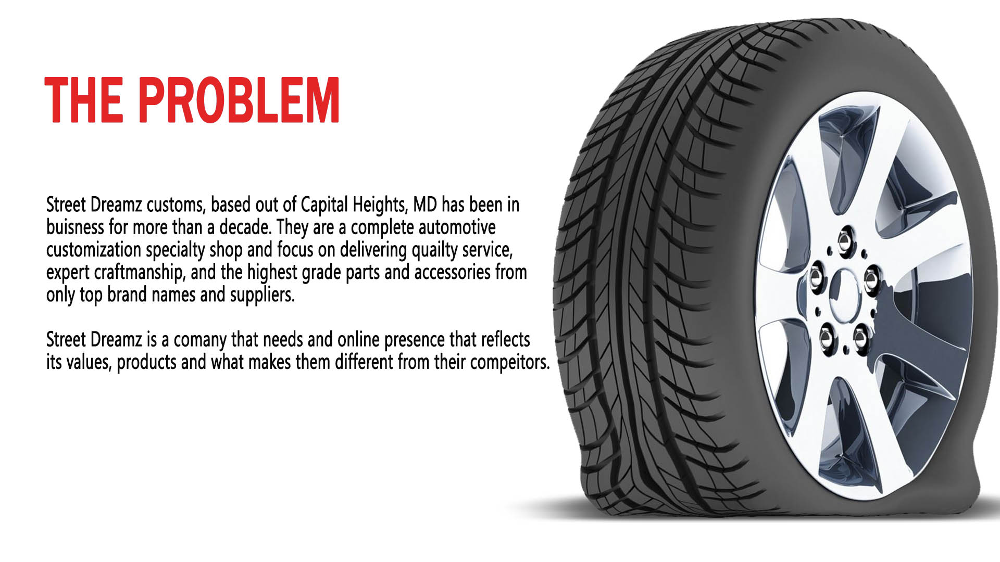
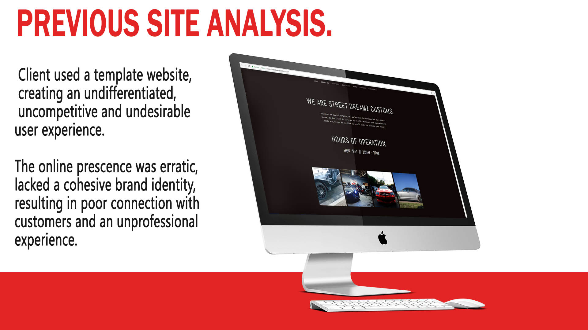

Role: Webdesigner
Agency: Freelance
Date: 2018
Brands are valuable
Invest in a sound process when building yours!
DISCOVERY
The process begins with meeting the client to gather project requirements, and to discover their goals for the website. We dive deep into the problems they are trying to solve?

We work to identify what they are trying to accomplish? What is the product vision? Who is there target audience? Where do they want their user's to end up? We work with the clients to discover the who, what, where, when and why's?

EXPLORATION
When required we perform and existing site analysis, group any insights obtained, together with all the information from discovery, and begin to build our User Flows, User Persona's, and establish who our typical user is. This enables us to start to build a site around this particular users needs and requirements. Targeting this user specifically helps develop a site that will better impact a postive outcome for our target audience.

PROTOTYPE
Build out wire frames, information architecture, and site maps to really nail down a solid design. Each project has unique challenges. We find soulutions through working with low fi mockups and prototypes, iterating and testing, utilizing UX princials and design thingking. Mockups are made quickly and efficently using Sketchapp and prototypes are created either in Invision or now in the updated version of Sketch.

UI DESIGN
Build out mood boards, style guides, and establish good color theory, hierarchy, typography, textture and good UI practices to really nail down a solid design. Each project is unique, so we continue to build off the information gathered from our mockups and prototypes and make necessary adjustments. Once design mockups are approved and all changes made, final UI designs made in photoshop are able to be handed off to development, or we can begin to code.

DEVELOPMENT
The website has been completely designed from front to back, now it is time to build the structure under the hood. We begin this process with HTML5, CSS3 and Javascript, either as a working prototype to hand off to the engineers to add back end functionality, logic and a database, or develop a full application, or it can remain as a static sight ready for the clients approval, depending on the requirments. As the designer, I continue to work through the process and ensure the build goes smoothly, address any questions or issues with the client or developers and make the necessary adjustments

QUALITY CONTROL
The website has been completely designed from front to back, now it is time to build the structure under the hood. We begin this process with HTML5, CSS3 and Javascript, either as a working prototype to hand off to the engineers to add back end functionality, logic and a database, or develop a full application, or it can remain as a static sight ready for the clients approval, depending on the requirments. As the designer, I continue to work through the process and ensure the build goes smoothly, address any questions or issues with the client or developers and make the necessary adjustments
© Leon Redman 2018, All Rights Reserved